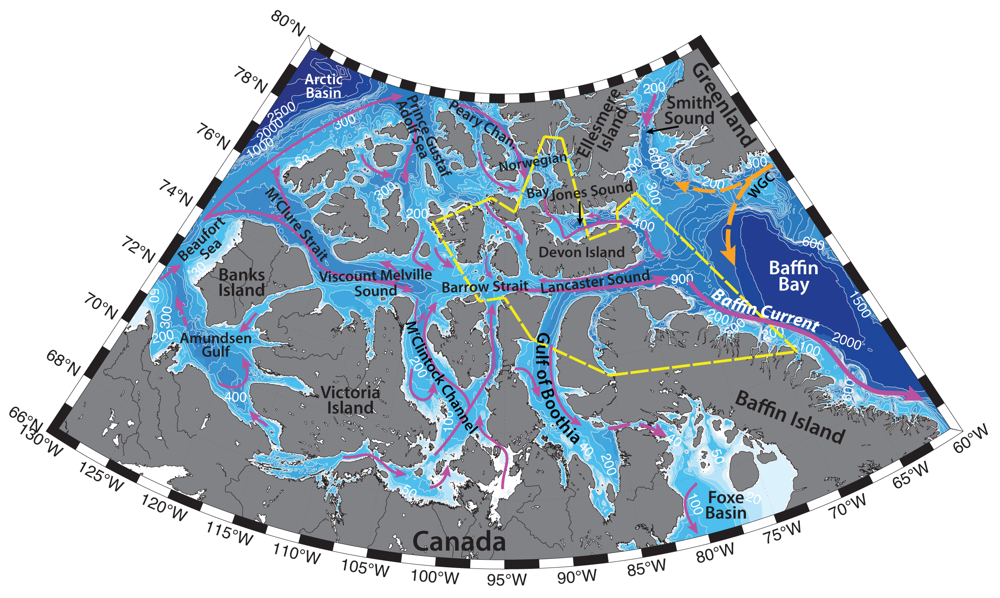

Schematic water circulation patterns and geographical place names in the Lancaster Sound region. Adopted from Bailey (1957), Michel et al. (2006), Peterson et al. (2012). Dashed yellow line marks the studied region.
Lancaster Sound region includes Lancaster Sound, northwestern part of the Baffin Bay, Wellington Channel, as well as parts of Barrow Strait, Norwegian Bay and Jones Sound. The best known passage through the Canadian Arctic Archipelago – the ‘Northwest Passage’ – runs through the Barrow Strait and Lancaster Sound. The shallowest sill on this passage of the ~125 m depth is located in Barrow Strait (Michel et al., 2006).
The Canadian Arctic Archipelago (CAA) is situated on a vast Canadian shelf and incorporates many narrow channels, dividing various basins and separated by sills (e.g. Michel et al., 2006). Hydrography of the CAA is determined by the complex topography, sea ice, freshwater and ice runoff from the archipelago glaciers, steric effects, atmospheric forcing, freshwater transport through the archipelago, various polynyas, strong tides and the exchange between the shelf and deep Arctic Basin.
Canadian Arctic Archipelago is one of the dominant pathways of surface outflow from the Arctic Ocean to the Atlantic (the other one being through Fram Strait), due to steric differences. The outflow of surface water through the CAA is fresher, compared to the outflow through Fram Strait. The majority of the CAA freshwater flux is in liquid form (>95 %), since much of the year the ice within the CAA is land-fast. Due to remote location, complicated topography, harsh winter conditions and narrow buoyancy driven boundary currents, the actual flow rates through the archipelago are difficult to obtain (see the figure for the schematic circulation; e.g. Michel et al., 2006).
General circulation of the Baffin Bay is predominately cyclonic, characterized by an advection of relatively warm water through Davis Strait along Greenland coast (West Greenland Current), an inflow of Arctic Water through Smith, Lancaster and Jones Sounds and a broad outflow of cold water on the western side of the Bay southwards along the Baffin Island coast (Baffin Current). Tang with coauthors (2004) have described, that the strength of the currents varies both spatially and seasonally from region to region. Overall, currents tend to be stronger during summer and fall at all depths, compared to winter and spring. Such structure can be explained by either seasonal variations of inflows from the northern straits, or larger transports of the Labrador Sea gyre in fall and winter, or the seasonal density structure of Baffin Bay and Davis Strait. Tang with coauthors (2004) documented the largest seasonal current variability along the Baffin Island slope and in Lancaster Sound.
The West Greenland Current (WGC; T ∼ −1.8°C, S ≤ 34.5; e.g. Cunny et al., 2002, 2005) carries cold, low-salinity Polar surface water from the East Greenland Current (EGC) and relatively ‘warm’ and saline Atlantic subsurface water from the Irminger Current (IC) northwestwards along the western Greenland shelf and shelf break (e.g. Cuny et al., 2002). On its way northwards, it also collects freshwater and icebergs from the Greenland Ice Sheet (Seidenkrantz, M.-S., 2013). Glaciers of the west coast of Greenland north of 68 ºN (e.g. Jakobshavn Isbrae ice massif) produce around 1015 kg/year of icebergs, especially in the Disko and Umanak bays (south and north of Disko Island, respectively). No icebergs of significant size are produced by glaciers of the Canadian Archipelago. In general, icebergs with mass greater than 1 million tons tend to drift north, while smaller icebergs tend to drift south- and southeastwards (Tang et al., 2004).
While WGC is thought to transport heat and salt into northern Baffin Bay (Melling et al., 2001), it is unclear, how far north the current can propagate, due to the lack of in-situ measurements in the Baffin Bay. Some studies (e.g. Loder et al., 1998) suggest, that it can flow north up to about 75°N, where it turns cyclonically around the Baffin Bay and joins the Baffin Current. The warmer and saltier Irminger Sea Water (ISW; T ∼ 4.5°C, S ∼ 34.95 psu) is advected underneath the colder WGC. It is the remnant water from Gulf Stream, advected in the Irminger Current along the Subpolar Gyre (Clarke, 1984).
The Baffin Current carries the Arctic outflow from the Canadian Arctic Archipelago southwards. In northwestern Baffin Bay it occupies the entire water column, to a depth of 500 m (Melling et al., 2001). This cold and relatively fresh water is advected along the Baffin Island coast and, further joins the Labrador Current – flowing along the Labrador Peninsula down to Newfoundland (Seidenkrantz, 2013). The thermohaline circulation of the North Atlantic Ocean is sensitive to the volume and freshwater transport from Arctic Ocean, as Arctic waters freshen the surface, stabilizing the water column and thus reduce the rate of deep-water formation in the Labrador Sea (Tang et al., 2004).
The limited available data from the CAA show that the volume, freshwater and heat fluxes through the CAA channels (as well as temperature, salinity, velocity fields) vary greatly both seasonally and interannually. Fluxes are small in fall/winter and reach their maximum in late summer. Estimates range from 0.7 to 2.5 Sv of southward volume flux (Prinsenberg, Hamilton, 2005). Michel with coauthors (2006) describe, that while over the past 30 years there are decreasing sea ice cover trends in the Arctic, and the associated increase in the inflow of Atlantic water to the Arctic, various research suggests that during the cyclonic circulation mode, there is more export of Pacific water through the Canadian Arctic Archipelago.
Fluxes through Lancaster Sound are thought to make up 40–50% of the fluxes through the Canadian Archipelago, based on model simulations, and are estimated to be ~0.46 Sv eastwards of the mean volume transport with the mean freshwater transport of ~0.032 Sv (Peterson et al., 2012). The flow through the Barrow Strait and Lancaster Sound is driven mainly by the sea level difference along the Northwest Passage, and alongshore winds in the Beaufort Sea. Peterson with coauthors (2012) suggest, that in general, a cyclonic wind pattern centered in the area of the Arctic High and the Beaufort Gyre likely causes high transport through Lancaster Sound. There is some evidence, that transport through the CAA straits depends also on the northwestward winds east of Greenland, but the degree of this effect is still unknown and needs further investigation (Peterson et al., 2012).
Baffin Bay is partially ice-covered most months of the year, except for August and September, with the maximum ice coverage in February – March (e.g. Seidenkrantz, 2013). During summertime ice disappears quickly in the eastern part of the Baffin Bay due to relatively warm West Greenland Current, while in the western and central parts of the bay ice remains much longer, as a consequence of the cold Arctic Water at the surface. Baffin Current at the western margin of the bay also transports ice southwards along the Baffin Island shore towards the Davis Strait. During cold season ice thickness also tends to decrease towards Greenland (e.g. Tang et al., 2004; Seidenkrantz, 2013). During the annual ice retreat, phytoplankton blooms are commonly observed at the ice edge. Though they are generally short-lived, they have a substantial impact on the ecosystem, providing food for the benthic communities in the region (Seidenkrantz, M.-S., 2013)
In the Canadian Arctic Archipelago sea ice is found all year round, and is generally land-fast due to the narrow width of the channels. Minimum ice cover is observed in September, freeze-up – in late December. Various polynyas are known to exist in the Canadian Arctic Archipelago (e.g. Topham et al., 1983), for example, Dundas Island Polynya (located between Cornwallis and Devon Islands, in the Wellington Channel), Lancaster Sound Polynya and the North Water Polynya in the Northern Baffin Bay and Smith Sound region. Polynyas are very sensitive to the air temperatures – for example, Topham with coauthors (1983) argue, that the air temperature in early February is a critical factor in determining whether or not a sizeable area of open water persists throughout the year. The North Water Polynya (a latent heat recurrent polynya) is formed by northerly winds and southward flowing current during wintertime (e.g. Muench, 1970; Melling et al., 2001). It usually starts to form in winter, often combining a number of leads across the region, and gets to the largest ice-free area in June. The North Water Polynya region is fed by a cold inflow from the Arctic Ocean that flows southward through Smith Sound, however an ice ridge in the Nares Strait prevents ice from the north entering the region (Melling et al., 2001). Polynya is thought to also be sustained by the upwellings of oceanic heat near the Greenland coast in late spring. Ice formed in the North Water Polynya gets entrained into the Baffin Current and can travel southwards into the Labrador Sea (Tang et al., 2004). Polynyas play an important role in the life of the Arctic, due to upwelling of nutrients, increased light availability, high productivity and sedimentation rates, etc., providing feeding grounds for a variety of marine life (e.g. Topham et al., 1983; Michel et al., 2006). Local winter water can be formed in the polynyas due to cooling and salinization via ice formation.
Water column in the Lancaster Sound region is comprised of the water masses of Arctic, Pacific and Atlantic origin waters, mainly advected from the Canada Basin (e.g. Bailey, 1957; Michel et al., 2006), but also from the Baffin Bay. Due to the general southward flow through the archipelago from the Arctic, the influence of the Arctic waters in the straits of CAA is significant. Surface layer can have wide range of temperatures (T can reach 5 – 6 ºC) and salinities (S > 34), amongst other factors caused by the melting and freezing of the extensive ice cover, but nevertheless this layer is generally rather cold and fresh (-1.8<T<0ºC, S from <31 up to 34.4; Muench, 1970; Bailey, 1957), with observed thickness from 20 to 75 m (observed down to 300 m in Baffin Bay). Atlantic-origin waters (0<T<2ºC, 34.2<S<34.5) can reside just below the Barrow Strait sill depth (~120 m), identifiable by temperatures increasing with depth and by a change of slope in salinity profiles (e.g. Michel et al., 2006). Pacific-origin waters are often traced by the higher nutrient concentrations. During their transit through the Archipelago, water masses undergo mixing and geochemical modification, e.g. the base of the seasonal mixed layer becomes progressively shallower, colder and more saline as it moves east from the Arctic Ocean to Barrow Strait. From M’Clure to Barrow Strait the nutrient maximum is ~50 m shallower than in the open water of the Canada Basin and occurs at progressively higher salinities as a result of turbulent mixing. (e.g. Michel et al., 2006). Winter cooling and ice freeze-up can cause salinization and densification of the water, and subsequent formation of the denser water mass, which sinks to the bottom. Such waters with temperatures close to freezing can accumulate in the deeper parts of the CAA, or get advected out from the channels into the Baffin Bay, and, e.g., contribute to cold Baffin Bay Deep Water (-0.4<T<0ºC, S ~ 34.48; e.g. Muench, 1970; Tang et al., 2004). While the sill in the Barrow Strait may divide the region into different hydrographic regimes, the variability of the water column across the straits is known to be very high: various authors observed flow reversals along the shores and at the bottom, prevalence of Arctic waters and prevalence of Pacific-origin waters, stratified and mixed water column, etc. (e.g. Michel et al., 2006).
Strong tidal currents (predominantly semi-diurnal), arriving in the CAA mainly from the Atlantic Ocean, largely influence hydrography of the region, e.g. they enhance mixing in the region (e.g. during spring tides in Barrow Strait area), or contribute to opening of polynyas, by causing upwellings of warmer and more saline water from below 50 m depth to the surface across shallow sills (e.g. Topham et al., 1983, Michel et al., 2006). In the vicinity of Barrow Strait, they can reach 50–150 cm/s. Numerical modelling report maximum tidal currents (M2, S2, K1, and O1 constituents) to be typically 0.2– 0.4 m/s in amplitudes (e.g. Michel et al., 2006).